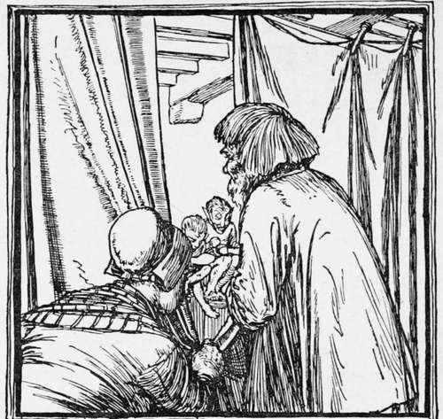

The Elves And The Cobbler
Description
This section is from the book "Household Tales by Brothers Grimm", by Brothers Grimm. Also available from Amazon: Household Tales by Brothers Grimm.
The Elves And The Cobbler
There was once a cobbler, who worked very hard and was very honest: but still he could not earn enough to live upon; and at last all he had in the world was gone, save just leather enough to make one pair of shoes.
Then he cut his leather out, all ready to make up the next day, meaning to rise early in the morning to his work.
His conscience was clear and his heart light amidst all his troubles; so he went peaceably to bed, left all his cares to Heaven, and soon fell asleep. In the morning after he had said his prayers, he sat himself down to his work; when, to his great wonder, there stood the shoes all ready made, upon the table. The good man knew not what to say or think at such an odd thing happening. He looked at the workmanship; there was not one false stitch in the whole job; all was so neat and true, that it was quite a masterpiece.
The same day a customer came in, and the shoes suited him so well that he willingly paid a price higher than usual for them; and the poor shoemaker, with the money, bought leather enough to make two pair more. In the evening he cut out the work, and went to bed early, that he might get up and begin betimes next day; but he was saved all the trouble, for when he got up in the morning the work was done ready to his hand. Soon in came buyers, who paid him handsomely for his goods, so that he bought leather enough for four pair more. He cut out the work again over-night and found it done in the morning, as before ; and so it went on for some time: what was got ready in the evening was always done by daybreak, and the good man soon became thriving and well off again.
One evening, about Christmas time, as he and his wife were sitting over the fire chatting together, he said to her, " I should like to sit up and watch to-night, that we may see who it is that comes and does my work for me." The wife liked the thought; so they left a light burning, and hid themselves in a corner of the room, behind a curtain that was hung up there, and watched what should happen.
As soon as it was midnight, there came in two little naked dwarfs; and they sat themselves upon the shoemaker's bench, took up all the work that was cut out, and began to ply with their little fingers, stitching and rapping and tapping away at such a rate, that the shoemaker was all wonder, and could not take his eyes off them. And on they went, till the job was quite done, and the shoes stood ready for use upon the table. This was long before daybreak; and then they bustled away as quick as lightning.
The next day the wife said to the shoemaker, " These little wights have made us rich, and we ought to be thankful to them, and do them a good turn if we can. I am quite sorry to see them run about as they do; and indeed it is not very decent, for they have nothing upon their backs to keep off the cold. I'll tell you what, I will make each of them a shirt, and a coat and waistcoat, and a pair of pantaloons into the bargain; and do you make each of them a little pair of shoes."
The thought pleased the good cobbler very much; and one evening, when all the things were ready, they laid them on the table, instead of the work that they used to cut out, and then went and hid themselves, to watch what the little elves would do.
About midnight in they came, dancing and skipping, hopped round the room, and then went to sit down to their work as usual; but when they saw the clothes lying for them, they laughed and chuckled, and seemed mightily delighted.
Then they dressed themselves in the twinkling of an eye, and danced and capered and sprang about, as merry as could be; till at last they danced out at the door, and away over the green.
The good couple saw them no more; but every thing went well with them from that time forward, as long as they lived.
Continue to:
Tags
fairy tales, children's stories, brothers grimm, household tales